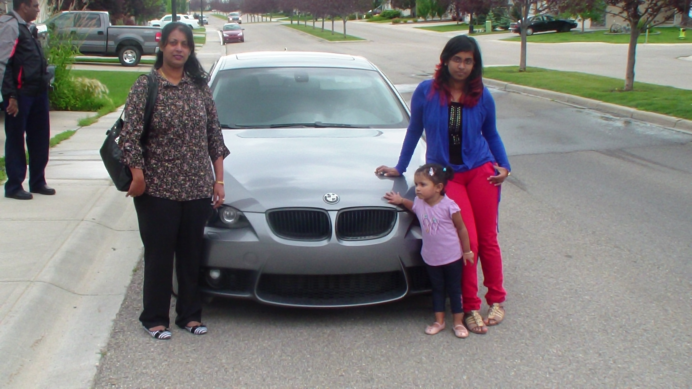
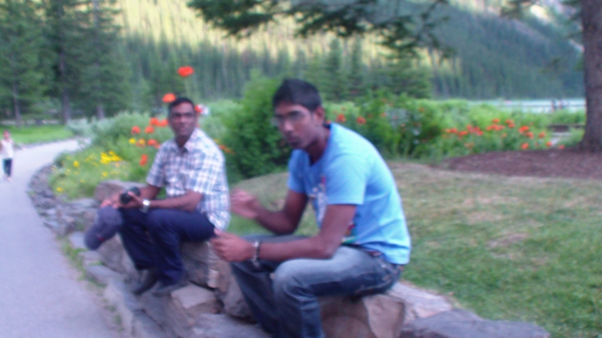

2013 was our first trip to Canada and we had planned to spend a whole month. We had prepared for the trip since a long time. Visa applications for Canada took almost 4 months. It had a lot of formalities. We needed to have required amount of money in our bank accounts to show that we could live in Canada for a month. Additionally, we needed to give proof of a permanent job in Mauritius for both myself and my wife.
When the departure date finally came, the children were very excited. The trip was a long one though. The travelling time about 22 hours, plus a waiting time of almost 6 hours in London and about 3 hours in Toronto, before we finally flew to Calgary. To make the best of the trips, I watched no less than 6 movies. On entering Canada, we noticed that the custom officers were very polite and welcoming. We picked up our luggage in Toronto as this was the point of Entry in Canada, then dropped in again for the Toronton-Calgary trip. the trip to Calgary was a pleasant one as it was daylight and summer and we could admire the beatiful sceneries of Canada.
We reached Calgary at around 4.30 pm. My brotherin-law and his wife had come to fetch us at the airport. Our first experience of Calgary was a beautiful one. As we stepped out of the airport, we were greeted by the pure and fresh air. The drive to my brother-in-laws place took about 45 minutes. We were impressed by the clealiness of Calgary. The city looked like a very nice place to live. Apart from its cleanliness, the roads are big, with multiple lanes. We noticed that drivers had very good lane discipline. We noticed that the road structures were substantially different from those of Mauritius. At most street lights, there were right-turn lanes and left-turn lanes. The rules are also different as in Canada, a right turn is permitted on red-lights, before making a left-turn on a normal green-light, you have to check for incoming traffic and pedestrians crossing the road, while a green arrow implies that the full-priority is yours. Additionally, it was the first time we were visiting a country where the driving was on the right-hand-side of the road.
The first few days, we spent visiting Calgary. We visited the Chinook Mall, which was quite impressive. The movi theatres were also pretty impressive. We had the opportunity to attend a magic show, a 4D movie and shows with dolphins. We also visited an underwater aquarium. We wanted to visit the zoo, but unfortunately, major flooding had occured in Calgary a few days earlier and the zoo had been flooded. The animal had had to be moved and the zoo was closed. We enjoyed travelling by the light rails in Calgary and we visited the Calaway park with its roller coasters and rapid river boats. That was really great fun.
Then we went on a long drive to Jasper, Banff and Lake Louise. The roads in those areas of of a natural beauty. However, their bare rocks and a few fallen ones give an indication that in winter they may be dangerous, specially if there is an avalanche. On the way, we stopped at a glacier. The glaciers are tempting for people to walk upon, but there are warning signs of their potential dangers and safely limits demarcated by ropes. Lake louise is also another natural beauty. Banff is a big tourist attraction. With its mountains, cable cars and the hot-water tub. The streets of Banff are crowded with tourists. It restaunts and icecream parlours are also always full. Lake louise contains a nice big lake in front of a beautiful castle and surrounded by a garden full of beautifu-looking flowers. Both the lake and the garden are important tourist attractions.
The next part of our trip consisted of a really long drive to Vancouver. The drive took about 11 hours. We started at about 12.00 from Calgary and drove through the impressive forests and the Rocky Mountains. The drives seem interminable inspite of the beautiful scenery. We drove trough the Trans-Canada highway on and on. Finally we reached Vancouver at 11.00 p.m. As we wanted to travel to Vancouver island, we were just in time to book the tickets for the last ferry. We boarded the car on the ferry and we ourselves boarded the ferry for another 2-hour travel until Vancouver island. This was followed by one more hour by car until our hotel.